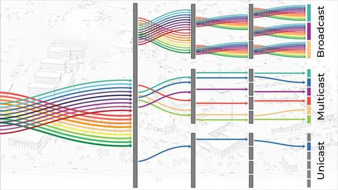

- Risoluzione
- FrameRate
- BitRate
- Qualità del suono

Esistono, però, diversi formati video, come nel caso di tutti gli altri file.
Esistono 2 diversi tipi di formati: i codec e i container.
I conteiner sono i formati video finali, ovvero, come dice il nome, contengono i dati del video.
I codec, invece, sono i formati utilizzati dal programma di editing video per codificare il video, tra di loro differiscono in base alla compressione, la quale può causare perdita di dati.

Streaming
Per quanto riguarda lo streming il discorso è completamente diverso, infatti possiamo parlare di streaming come il caso di Netflix, in cui ci sono contenuti su un server e noi
possiamo usufruirne, oppure un evento spostivo in live, quindi in diretta.
Infatti nel secondo caso bisogna trasmettere il video e l'audio nel minor tempo possibile, per questo bisogna fare una compressione veloce ma che non faccia perdere troppa qualità.
Unicast e multicast
Un'altra distinzione va fatta nel metodo di ricezione da parte degli utenti, abbiamo infatti due diversi metodi: il multicast e l'unicast.
Il primo caso viene usato ad esempio per il digitale terrestre, viene infatti condiviso un solo flusso e ogni utente che desidera vedere si collega al flusso.
Nel secondo caso, invece, che viene usato per lo streaming online, come ad esempio Dazn, i quali non possono trasmettere un solo flusso, infatti il video cambia in base al dispositivo quindi c'è un flusso diverso per ogni utente su ogni dispositivi, più persolanizzato.
Tuttavia questi sono problemi che non riguardano i singoli utenti, bensì le grandi società o le singole persone che producono contenuti, infatti, con l'avvento della fibra ottica, vedere contenuti in alta definizione non è più un problema
